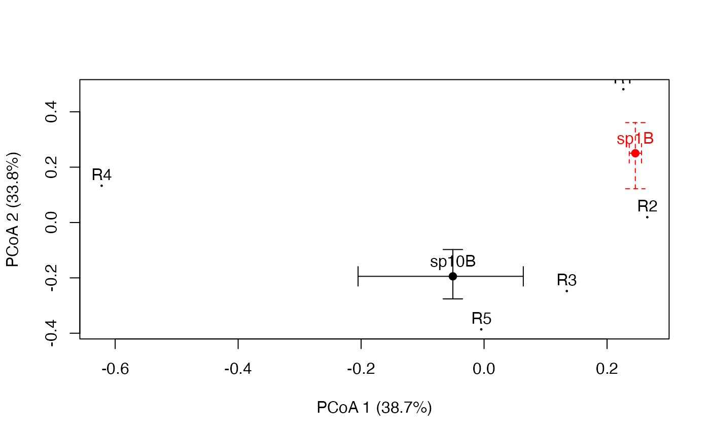

plotniche.RdFunction plotniche draws a resource niche on the resource space computed by means of principal coordinates analysis. Resource relationships are given in distance matrix D, the species resource use is given in P and the availability of resources is given by vector q.
plotniche(P, D = NULL, q = NULL, mode = "multiple", Np = NULL,
Nq = NULL, nboot = 1000, alpha=0.05, species=NULL, axes=c(1,2),
chull=TRUE, bubbles=TRUE, writeName=FALSE, add=FALSE, col="black", lty=1,...)Data frame containing the relative or absolute usage that a set of species (in rows) make of a set of resources (in columns).
Object of type dist containing distance values between resources. If no distance matrix is provided (i.e. if D==NULL), the distances between resources is assumed to be maximum.
Vector with the availability of each resource.
Either mode = "single" (rows of matrix P are individual observations to be pooled for a single niche) or mode = "multiple" (rows in P represent different niches).
Vector with the number of observations per species from which the values in P come (in mode = "multiple").
The number of observations per species from which the values in q come.
Number of boostrap samples used to compute bias-corrected percentile confidence intervals.
Used to set the confidence level (i.e. alpha = 0.05 means 95 percent confidence interval).
Specifies which species niche is to be plot. This parameter is mandatory and can be either an numeric index or a string for a species name.
PCoA axes used for plotting.
whether or not convex hulls should be drawn (only in type="single").
draws bubbles proportional to resource preference data.
flag indicating whether or not the name of the species should be drawn beside the centroid.
color of the centroid and confidence interval arrows.
line type of the confidence interval arrows.
if TRUE, the current plot is used. This is helpful to draw more than one species on the same plot (see examples).
additional graphical parameters.
The method is described in De Caceres et al. (in prep). If the distance matrix is not specified (i.e. if D=NULL) the function assumes that all resources are at a maximum distance (d=1). If the resource availability vector q is given then the values in P are taken as assessments of resource use and the species preference is calculated taking into account resource availability. Otherwise resource use is equated to resource preference. The function can also plot bootstrap confidence intervals following the bias-corrected percentile method (Manly 2007). If If mode = "multiple" and Np != NULL, bootstrap samples for a given species are generated assuming a multinomial distribution with the proportions calculated from the corresponding row values in P, and the number of observations comes from the corresponding element in Np. If mode = "single" then the bootstrapped units are the rows of matrix P. In both cases, if Nq is indicated, the availability of resources is also bootstrapped. The bias-corrected percentile method was described for overlap niche measures in Mueller and Altenberg (1985) and is extended here for all niche metrics except nichearea.
Mueller, L.D. and L. Altenberg. 1985. Statistical Inference on Measures of Niche Overlap. Ecology 66:1204-1210.
Manly, B.F.J. 2007. Randomization, bootstrap and Monte Carlo methods in biology. Chapman and Hall texts in statistical science series. 2nd edition.
De Caceres, M., Sol, D., Lapiedra, O. and P. Legendre. (2011) A framework for estimating niche metrics using the resemblance between qualitative resources. Oikos 120: 1341-1350.
See nichevar and nicheoverlap to obtain a resource niche metrics.
# Loads example data
data(birds)
plotniche(birdsbreed, D = resourceD, mode="multiple", species=10)
#>
#> Plotting species : sp10B #: 10
#>
plotniche(birdsbreed, D = resourceD, mode="multiple",
Np = rowSums(birdsbreed), Nq = 100, species=10)
#>
#> Plotting species : sp10B #: 10
#>
plotniche(birdsbreed, D = resourceD,
q = c(0.18, 0.24, 0.22, 0.21, 0.15), mode="multiple", species=10)
#>
#> Plotting species : sp10B #: 10
#>
plotniche(birdsbreed, D = resourceD,
q = c(0.18, 0.24, 0.22, 0.21, 0.15), mode="multiple",
Np = rowSums(birdsbreed), Nq = 100, species=10)
#>
#> Plotting species : sp10B #: 10
#>
#draw two species
plotniche(birdsbreed, D = resourceD, mode="multiple",
Np = rowSums(birdsbreed), Nq = 100, species=10, writeName=TRUE,
bubbles=FALSE, chull=FALSE)
#>
#> Plotting species : sp10B #: 10
#>
plotniche(birdsbreed, D = resourceD, mode="multiple",
Np = rowSums(birdsbreed), Nq = 100, species=1, writeName=TRUE,
bubbles=FALSE, chull=FALSE, add=TRUE, col="red", lty=2)

#>
#> Plotting species : sp1B #: 1
#>